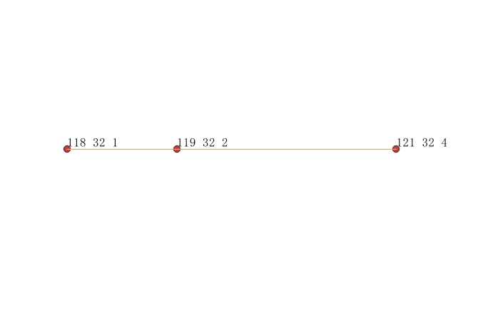
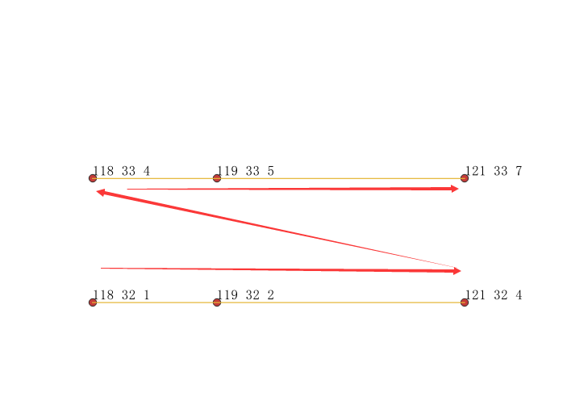
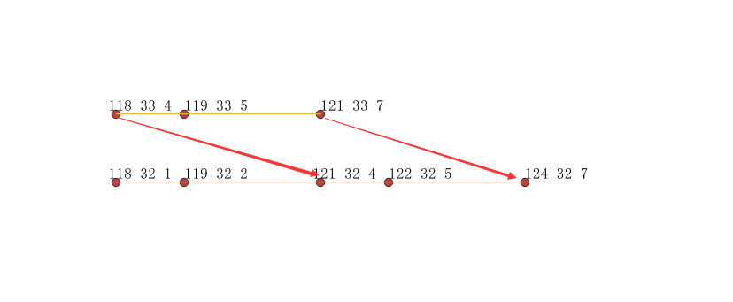

ST_AddMeasure
方法功能描述
已知一条线，通过在起点设置一个测量值，终点设置一个测量值的方式，从而对线上任意位置线性插值了测量值。如果线图形没有测量值，将添加测量值，如果线图形已有测量值，将会被新计算后的测量值“替换”。
函数定义
geometry ST_AddMeasure(geometry geom_mline, float8 measure_start, float8 measure_end);
参数定义：
geom_mline：对输入的线进行添加测量值操作，必须是LineString或MultiLinString类型。
measure_start:测量值起点，该值对应输入线的起点。
measure_end:测量值终点，该值对应输入线的终点。
返回值：LineStringM或MultiLinStringM带M值图形。
API示例
- LineString

SELECT ST_AsText(ST_AddMeasure(
ST_GeomFromEWKT('LINESTRING(118 32, 119 32, 121 32)'),1,4)) As ewelev;
ST_AsText
-----------------------------------------
LINESTRING M (118 32 1,119 32 2,121 32 4)
结论：没有测量值，将会对线添加测量值。
- LineStringM
SELECT ST_AsText(ST_AddMeasure(
ST_GeomFromEWKT('LINESTRINGM(118 32 7, 119 32 8, 121 32 10)'),1,4)) As ewelev;
ST_AsText
-----------------------------------------
LINESTRING M (118 32 1,119 32 2,121 32 4)
结论：已有测量值，将会用新测量值“替换”旧测量值。
- MultiLineString

SELECT ST_AsText(ST_AddMeasure(
ST_GeomFromEWKT('MULTILINESTRING((118 32,119 32,121 32),(118 33, 119 33, 121 33))'),1,7)) As
ewelev;
注意：第一个子线的最后一个点是(121 32 4)与第二个子线第一个点(118,33,4)，测量值都是4，这是什么原因？
原理：ST_AddMeasure函数是把第二个子线的起点拼接到第一个子线的终点，那么可以121 32和118 33硬凑一起了。
那么第二条子线(118 33, 119 33, 121 33)就会变成(121 32,122 32,124 32)。

拼接到一起，然后计算测量值，然后再把测量值对应写会第二条子线上。
错误使用场景
新闻广播中常常有这样的报道：距离xx高速入口30公里处发生交通事故，这时地图上有个闪动的事故点，标明事故地点。为了实现这些功能，某技术人员对一条道路，其图形为线LineString(119 30,120.22 30.22,120.33 30.33)添加地理长度测量值，这条线起点（等同高速入口的意思）位置为0，终点设置为线的球面距离，这样，当计算某事故点距离起点多少米时，可以快速获取点的坐标位置。
第一步：计算线的真实长度：
select ST_Length(ST_GeomFromText('LineString(119 30,120.22 30.22,120.33 30.33)',4326)::geography);
ST_Length
------------------
136231.99705736412
第二步：给线添加测量值：
select ST_AsText(ST_AddMeasure(
ST_GeomFromText('LineString(119 30,120.22 30.22,120.33 30.33)',4326),0,136231.99705736412));
st_astext
------------------------------------------------------------------------------------
LINESTRING M (119 30 0,120.22 30.22 121042.702052768,120.33 30.33 136231.997057364)
第三步：验证结果：
建立测量值后，[120.22 30.22]点处测量值M为121042.702052768。
计算起点线到[120.22 30.22]点真实球面距离为120085.05682156245。
select ST_Length(ST_GeomFromText('LineString(119 30,120.22 30.22)',4326)::geography);
ST_Length
------------------
120085.05682156245
==技术人员结论：[120.22 30.22]测量值M与真实距离不一致。==
错误原因：终点处是通过geography类型计算的球面距离，但是ST_AddMeasure函数入参只能是geometry类型，导致球面距离线性插值到平面的geometry图形上，于是，在节点处导致测量值M与ST_Length不一致。
验证想法：线路长度使用平面长度，把平线长度的结果线性插值到平面线图形上：
--平面geometry距离
select ST_Length(ST_GeomFromText('LineString(119 30,120.22 30.22,120.33 30.33)',4326));
ST_Length
------------------
139524.0869245977
--平面距离，添加测量值
select ST_AsText(ST_AddMeasure(
ST_GeomFromText('LineString(119 30,120.22 30.22,120.33 30.33)',4326),0,139524.0869245977));
st_astext
------------------------------------------------------------------------------------
LINESTRING M (119 30 0,120.22 30.22 123967.737738494,120.33 30.33 139524.086924598)
--起点到[120.22 30.22]处的平面距离
select ST_Length(ST_GeomFromText('LineString(119 30,120.22 30.22)',4326));
ST_Length
------------------
123967.737738494
结论：都统一使用平面距离后，线性插值的M值与实际计算的平面长度一致。因此，ST_AddMeasure不会导致计算结果出现差异，差异是平面球面理解不深，混合杂用导致计算维度不统一形成差异。
==引申：然而平面距离的确不是球面距离，如果就是使用球面距离计算位置，如何计算？假设我们要求距离起点60000米（真实地理距离，球面距离）的位置点坐标。==
--先计算整条线球面长度
select ST_Length(ST_GeomFromText('LineString(119 30,120.22 30.22,120.33 30.33)',4326)::geography);
ST_Length
------------------
136231.99705736412
--计算60000米占总长度的百分比。
select 60000/136231.99705736412 as per;
per
----------------------
0.44042516659823608027
--根据百分比定位
SELECT ST_AsText(ST_LineInterpolatePoint(ST_GeomFromText('LineString(119 30,120.22 30.22,120.33 30.33)',4326), 0.44042516659823608027));
ST_AsText
---------------------------------------
POINT(119.604745257323 30.1090524234517)